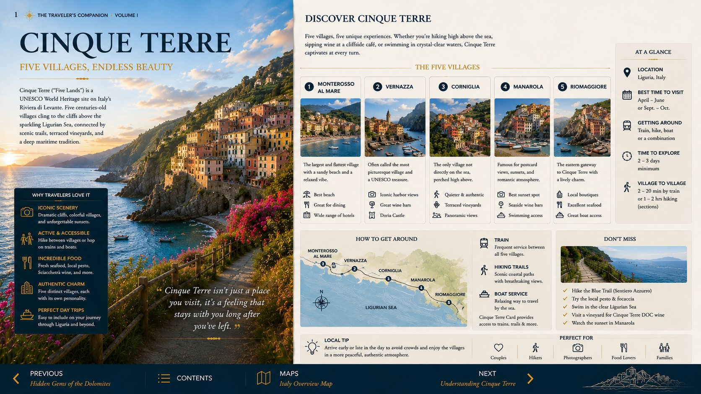
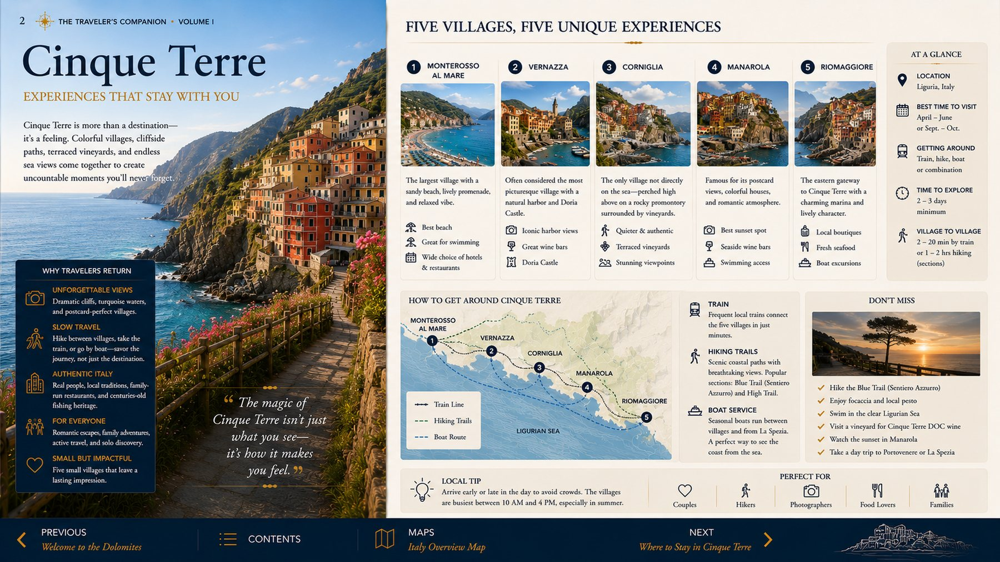
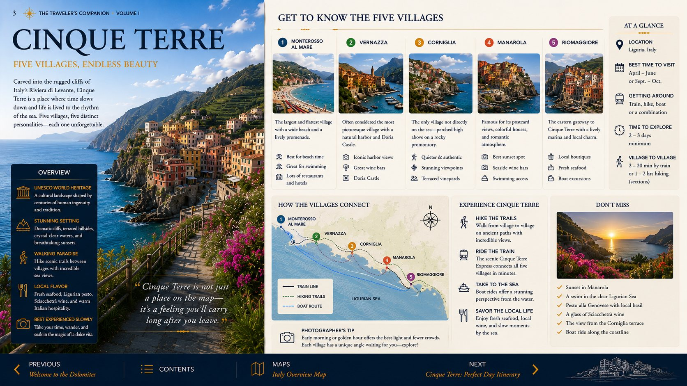
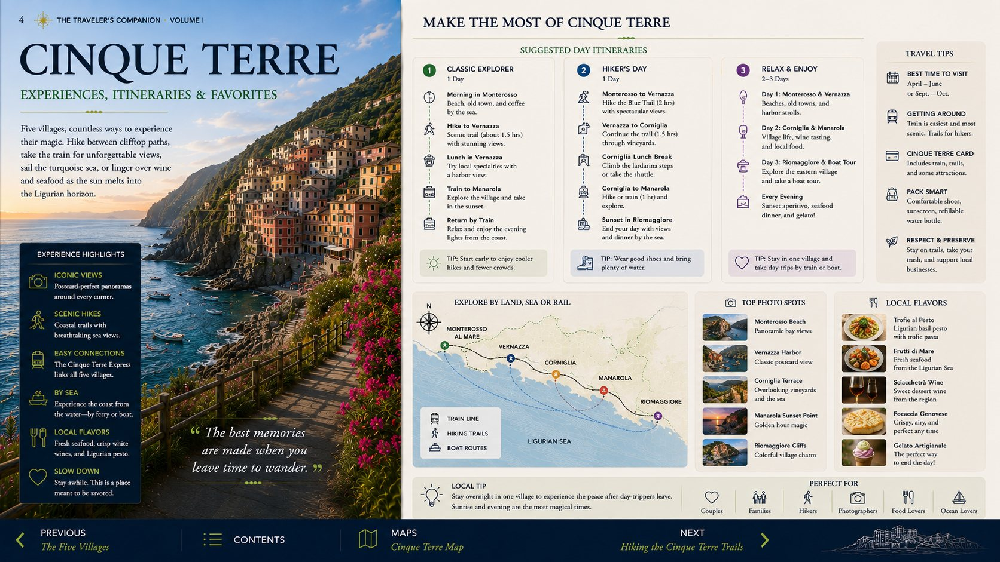
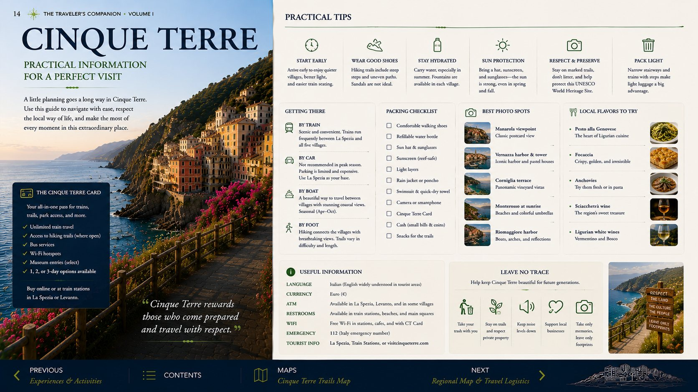
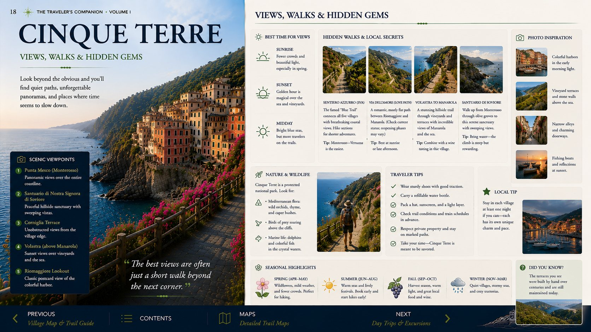

Trail rule
Never assume a coastal segment is open. Check the park’s live trail map that morning, especially after rain.
Two nights among five cliffside villages, using trains and ferries to keep the visit efficient and a moderate walk only when conditions cooperate.

Think of the villages as a linked coastal circuit, not five separate checklists.
Begin in your base or the village you most want to photograph; explore before the midday train crowds peak.
Use the train for efficiency and the ferry for scenery, weather permitting.
Choose one waterfront for aperitivo and sunset rather than chasing another village.
Never assume a coastal segment is open. Check the park’s live trail map that morning, especially after rain.
The higher routes can be more rewarding and less congested than the famous low trail, but they include real climbing and uneven stone steps.
Access is controlled and generally requires a timed reservation; enter from Riomaggiore and follow the current one-way arrangement.
If boats stop and trails close, use the regional train, linger over lunch, and explore churches, lanes and viewpoints within two villages.
Use the arrival evening for atmosphere. Reserve the full day for trains, ferries and one carefully chosen walk rather than attempting every trail.
You do not need equal time in every village. Choose according to atmosphere, views and how the day is flowing.
Beach, easiest walking and a practical starting point for the classic trail.
The most dramatic harbor setting and one of the strongest viewpoints.
Quieter and elevated; rewarding if stairs and time are not a concern.
Iconic cliffside view and excellent late-afternoon atmosphere.
Steep lanes, harbor color and an appealing evening stop.
Driving between villages is rarely the efficient choice. Park once and use the transport system designed for the coast.
The dependable backbone of the visit. Expect busy platforms and keep schedules accessible.
The best visual experience, but dependent on weather and sea conditions. Use it as a bonus, not the only plan.
Useful for reaching your base, then best left parked. Confirm parking arrangements before arrival.
Trail status can change. Verify conditions locally before setting out and use trains as the fallback.
The classic Cinque Terre walk, with stairs, uneven footing and rewarding coastal views.
A strong alternative or extension if the first section is not enough and conditions remain good.
Use trains and ferries, then take short village walks and overlooks. You will still experience the coast well.
Leave early enough to handle parking departure, motorway traffic and the approach to Varenna without sacrificing the first lakeside evening.
Tap any spread to enlarge it. Images have been web optimized to keep the guide fast and easy to upload.






